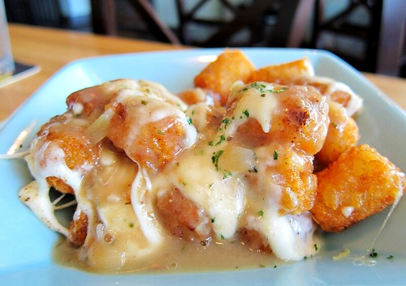

Casserole Recipe
This dish is a tater tot casserole. There are only 5 ingredients in this recipe. It is an easy meal to prepare for a quick dinner.
Ingredients
- 1 pound ground beef
- 1 (10.5 ounce) can condensed cream of mushroom soup
- Salt and ground black pepper to taste
- 1 (16 ounce) package frozen tater tots
- 2 cups shredded Cheddar cheese
Steps
- Gather the ingredients. Preheat the oven to 350 degrees F (175 degrees C).
- Heat a large skillet over medium-high heat. Cook and stir ground beef in the hot skillet until completely browned and crumbly, 7 to 10 minutes. Stir in condensed soup; season with salt and black pepper.
- Transfer beef mixture to a 9 by 13-inch baking dish; layer tater tots evenly on top and sprinkle with Cheddar cheese.
- Bake in the preheated oven until tater tots are golden brown and hot, 30 to 45 minutes.
- Serve and enjoy!
Back to Home Page